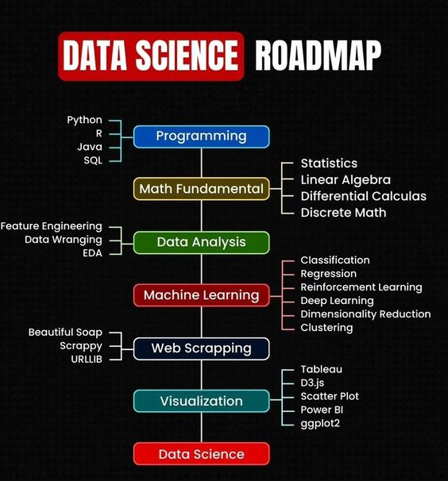
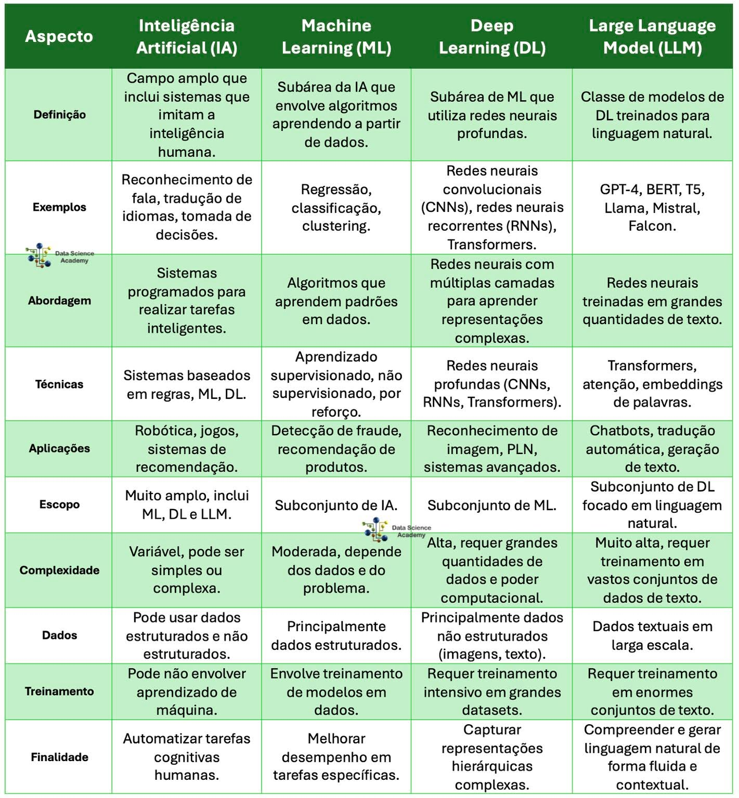

Introdução
Inteligência artificial é a área da ciência da computação responsável pelo desenvolvimento de sistemas que simulem a capacidade humana de resolver problemas. Os principais conceitos/áreas são:
- Inteligência computacional: Redes neurais, computação evolucionária, lógica nebulosa (fuzzy);
- Machine learning (ML, aprendizado de Máquina): Métodos matemáticos para treinar algoritmos;
- Data mining (mineração de dados): Extrair conhecimentos de base de dados, via métodos de machine learning;
- Neural network (rede neural): Tipo de ML, como um algoritmo;
- Deep learning (aprendizado profundo): Muito mais dados e processadores mais potentes (rede neural com muitas camadas);
- Big data: Imenso volume de dados (necessário algoritmos de ML para tratamento dos dados);
- Data analytics (análise de dados): Inspeção, transformação e modelagem de dados, a fim de obter informações e insights sobre;
- Data science (ciência de dados): Exploração e análise de dados (data analytics), envolvendo ciência da computação + estatística, além de ML.


Machine learning
Tipos de ML:
- Supervisonada (classificação e regressão);
- Não Supervisonada (associação, agrupamento, detecção de outliers, padrões sequenciais e sumarização);
- Reforço.
Métodos preditivos: Previsão resultante de conjunto de atributos.
- Classificação: Dividir atributos por determinadas classes (rótulos). Ex: pessoas que gostam de rock e pessoas que não gostam de rock;
- Regressão: Previsão realizada através da análise de valores numéricos, como dados históricos. Ex: com base em valores climáticos, medir previsão do tempo.
Métodos descritivos:
- Associação: Dados em comum (ex: maior histórico de compra de item x nos sábados);
- Agrupamento: Agrupar dados em comum (ex: grupo de games de ação, grupo de games de terror);
- Detecção de outliers (desvios): Detectar anomalias em grupos de dados (ex: atletas em doping - desempenhando além do normal);
- Descoberta de padrões sequenciais: Detectar relações entre grupos de dados (ex: leitor de Harry Potter tende a gostar de livros de Harry Potter);
- Sumarização: Abstrair dados de um grupo maior, conforme atributos solicitados (ex: BD de clientes, exibir somente cliente maiores de 50 anos);
Aprendizagem supervisionada: Classificar se foto refere-se ao Homer ou Bart Simpson. Fase 1 (treino), extraem-se as características de Homer e Bart (montagem do dataset - tabela com dados), após executa-se algoritmo ML (via supervisor), criando-se padrões de Homer e Bart, então tem-se modelo aprendido (distingue-se fotos de Homer e Bart). Fase 2 (teste), sumete-se foto desconhecida, para modelo distinguir se é Homer ou Bart. Fases treino/teste são denominados validação cruzada.
Aprendizagem não supervisionada: Análise automática dos dados (associação, agrupamento), sem supervisão, nem treinamento prévio (predição). Necessita somente descrição dos dados (descritiva) e análise para determinar significado dos padrões encontrados (verificar se resultados são pertinentes). Ex: se pessoa que compra x também compra y, então pessoas que comprarão x também comprarão y.
Aprendizagem por reforço: Aprender com interações do ambiente (causa e efeito), via experiência própria. Muito utilizada em SMA (sistema multiagente, com vários agentes interagindo no ambiente). Ex: robô automatizado bate em parede e danifica-se. Então, concluirá que deve evitar bater em paredes.
Variáveis
Em classificação, tem-se dataset (conjunto de dados, similar a tabela excel, geralmente CSV, banco de dados ou JSON). No dataset, cada registro (linha) posssui atributos (colunas) previsores (características, variáveis dependentes) e atributos meta/classe (resultado, variáveis independentes). Na aprendizagem supervisionada, a classe sempre é conhecida. Variável numérica pode ser contínua (número real) e discreta (número inteiro ou conjunto de valores). Variável categórica pode ser nominal (dado não mensurável, sem ordenação/gênero) ou ordinal (dado ordenado categórico (tamanhos p,m,g). Pode ser convertida para discreta via categorias numéricas (p=1,m=2,g=3)).
Etapas modelo preditivo
- Coleta de dados (via BD, CSV, JSON, big data, etc);
- Exploração e preparação dos dados (criação do algoritmo para tal);
- Importar bibliotecas;
- Upload do dataset e exploração dos dados brutos;
- Visualização dos atributos ordenadamente e em gráficos, a fim de encontrar relações entre previsores;
- Domain, separação entre previsores(x) e classes(y);
- Tratamento dos dados (valores faltantes, valores inconsistentes(outliers, normalization, standardisation, tipos diferentes));
- Divisão dados treinamento (x_train(previsores), y_train(classes)) e teste (x_test(previsoes) e y_test(classes));
- Criação do algoritmo IA.
- Treinamento do modelo (submeter dados de treinamento (x_train e y_train) ao algoritmo IA);
- Avaliação do modelo (comparar dados submetidos de treinamento (x_train e y_train), com dados de teste (x_test e y_test), para identificar precisão de acerto do algoritmo IA);
- Otimização do modelo (otimizar algoritmo IA, com melhores dados de treinamento, re-verificar precisão do algoritmo IA).